1. 개요
리에라몰은 효빈광역시 안천구 당가동에 떡하니 자리 잡은 초거대 지역 밀착형 복합쇼핑몰이다. 1970년대 후반 안천읍 시절 동네 백화점으로 시작하여 빚더미와 함께 파산 직전의 끔찍한 몰락을 겪었으나, 2022년 강타한 전무후무한 서브컬처 성지화 열풍을 영혼까지 빨아먹으며 지역 경제를 견인하는 기적의 씹덕(...) 쇼핑몰로 완벽하게 부활했다.
본래 이 쇼핑몰의 이름은 1994년, 당시 유행하던 서구식 네이밍 열풍을 따라 1대 대표 임승현이 '안천백화점'에서 간판을 바꿔 단 '리에라백화점(Liera)'에서 유래했다. 그런데 20여 년 뒤, 이름부터 위치(당가동=탕쿠쿠)까지 일본 애니메이션 러브 라이브! 슈퍼스타!!의 스쿨 아이돌 그룹 Liella!와 철자 하나 안 틀리고 완벽하게 겹치는 우주적 우연이 발생했다.
이를 하늘이 내린 동아줄로 삼은 현재 30대 후반(1983년생)의 2대 점장 임세혁의 미친 추진력 아래, 쇼핑몰 전체가 거대한 Liella! 헌정 테마파크 및 서브컬처 복합 문화 공간으로 뜯어고쳐지며 단숨에 전국구 핫플레이스로 떡상했다. 과거의 낡은 상가는 온데간데없고, 현재는 "오타쿠들이 한 번 들어오면 지갑이 다 털릴 때까지 제 발로 나가기 싫어하는 편안한 개미지옥 (일명 오타쿠 델루나)"으로 맹위를 떨치고 있다. 심지어 몰 내부에 단 20실 규모의 초호화 부티크 테마 객실을 갖춘 '리에라 호텔'까지 입점시키며 덕후들의 숙박까지 완벽하게 책임지는 오타쿠 공화국을 완성했다.
1.1. 주요 임직원 및 스태프 (광기의 서비스 마인드)
평범한 백화점의 안내원이나 경비원을 상상하면 큰 오산이다. 리에라몰의 전 직원은 입사 시 '서브컬처 기본 소양 및 위기 대처 테스트'를 거치며, 각 분야의 덕력 만렙 고인물들로만 정예로 구성되어 있다. 진상 고객보다 굿즈 리셀러(되팔이)를 더 증오하는 참된 직원들이다.
- 임세혁 점장 (자본주의의 화신 & 진성 하코오시): 몰락하던 상가를 오타쿠의 성지로 탈바꿈시킨 장본인. 자신의 6층 집무실을 아예 수억 원대 피규어 박물관으로 개조했으며, 매출 장부를 볼 때마다 모니터 속 Liella!를 향해 하루 세 번 절을 올린다. 워터드롭 호텔 고석연 지배인, 토치만 호텔 사장과는 상권의 주도권을 두고 피 튀기는 기싸움을 벌이지만, 뒤로는 "씹덕 코인" 콜라보를 통해 돈을 싹쓸이하는 철저한 비즈니스 카르텔 파트너다. 최근 첫째 딸 임은혜가 긁어대는 법인카드 명세서와 막내딸 임시연의 어마어마한 유기농 분유값 때문에 뒷목을 잡으면서도 "우리 딸내미들이 굿즈 샀으니 세금 공제 되려나"라며 긍정적으로 승화하는 무서운 멘탈의 소유자.
- 수석 컨시어지 (인포메이션 데스크의 셜록 홈즈): 1층 중앙 안내 데스크에서 근무하는 10년 차 베테랑. 매장 안내는 기본이고, 투숙객이나 방문객의 가방에 달린 캔뱃지나 굿즈 색깔을 단 0.1초만 스캔하고도 그 사람의 '오시(최애)'가 누구인지 완벽하게 파악한다. 그 즉시 "고객님의 동선에 맞춘 최적의 성지순례 루트 및 굿즈 재고 현황"을 A4 용지로 브리핑하며 뽑아주는 기적의 영업 능력을 지녔다.
- 특수 방범 경비팀 (무장 오타게 마스터): 겉보기엔 근육질에 검은 정장을 입은 살벌한 체격의 경비원들이지만, 이어폰에서는 늘 무전기 소리 대신 180BPM의 애니송이 흐른다. 5층 응원 상영관이나 3층 아쿠아마린 홀 연회장에서 라이브 뷰잉이 열릴 때 흥분한 군중을 통제하기 위해, 본인들이 직접 경광봉 대신 컬러 야광봉(킹블레이드)을 꺼내 흔들며 완벽한 칼각의 '오타게(응원 동작)'로 춤을 추며 바리케이드를 치는 진기명기를 보여준다. 진상 혐오 세력이나 굿즈 되팔이가 나타나면 곧바로 특수부대 모드로 돌변해 바닥에 꽂아버린다.
- 특수 청소팀 (피규어 & 등신대 전담 미화 아티스트): 쇼핑몰 곳곳에 널린 수백 개의 등신대 패널과 전시된 유리관 속 피규어들을 청소하기 위해, 일반 먼지떨이나 걸레가 아닌 '초극세사 스크래치 방지용 특수 브러시'와 '정전기 방지 장갑'을 허리춤에 권총처럼 차고 다니는 청소 장인들이다. 패널에 지문 하나 남지 않도록 매일 밤마다 광을 내며 닦는다.
2. 역사: 효자 백화점에서 유령 상가로
2.1. 창업주 임승현의 패기와 리에라백화점, 그리고 몰락
- 1970년대 후반: 30대 초반의 젊고 패기 넘치던 1대 창업주 임승현이 당시 안천구의 전신인 '안천읍'에 안천백화점을 세우며 호기롭게 유통업에 뛰어들었다. 당시에는 그냥 쌀이나 시장 옷 떼다 파는 거대한 구멍가게 수준이었다.
- 1985년: 안천읍이 안천구로 승격되자, 임승현은 "우리 안천구의 자존심을 세울 거대한 랜드마크를 만들겠다!"라는 야망을 품고, 안천지구와 가까우면서도 당시 똥값이던 당가동의 부지를 통째로 매입했다. 시공은 당시 1군 건설사였던 산곡건설에 맡겨 꽤 크고 튼튼하게 지어 이전했다.
이때까지만 해도 가문을 먹여 살리는 든든한 효자 노릇을 톡톡히 했다. - 1994년: 90년대 당시 전국적으로 불어닥친 서구식 네이밍 열풍에 편승하여, 다소 촌스러운 '안천백화점' 간판을 떼어내고 '리에라백화점(Liera)'으로 상호를 전격 변경했다.
- 1997년 (IMF) ~ 2000년대 초: 황금기는 길지 않았다. IMF 외환위기가 터지면서 대출 이자가 폭등하고 소비 심리가 박살 나자 백화점의 기세가 단번에 꺾였다. 엎친 데 덮친 격으로 거대 자본을 앞세운 대형 유통망(신세계, 롯데 등)이 효빈시에 진입하며 유통 대전쟁이 벌어졌다. 리에라백화점은 서서히 피가 말라갔고, 임승현은 특단의 조치로 백화점 간판을 내리고 복합쇼핑몰 '리에라몰'로 전환하여 생명 연장을 꾀했다.
- 2013년 (NC백화점의 역습): 리에라몰이 정식 백화점의 지위를 잃고 몰락해가는 틈을 타, 리에라몰보다 안천지구 중심에 더 가까웠던 2인자 포지션의 '2001아울렛'이 대대적인 증축과 리모델링을 거쳐 'NC백화점 효빈점'으로 승격했다. 이로 인해 리에라몰은 안천구 유일의 백화점 타이틀을 NC백화점에게 완벽하게 빼앗기고, 동네 할아버지들이 여름에 무료로 에어컨 쐬러 오거나 층 전체가 통으로 비어있는 유령 상가로 전락하는 굴욕을 겪었다.
3. 점장 '임세혁'의 피눈물 나는 막장 휴먼 드라마
이 기적의 한가운데에는 파산 직전의 몰을 어떻게든 살려보려고 밤낮으로 뼈를 깎다, 결국 광기의 하코오시(그룹 멤버 전체를 숭배하는 극성 팬)로 완벽하게 타락(?)해버린 2대 점장 임세혁(1983년생)이 있었다.
3.1. 셋째 아들의 저주: 35살에 똥덩어리를 물려받다
임승현 슬하에는 3명의 아들이 있었다. 첫째 아들은 머리가 좋아 일찌감치 명문대를 졸업하고 타 도시의 대기업에 취직해 "나 그 빚 덩어리 썩은 건물 안 받아요"라며 호적을 파다시피 도망쳤다. 둘째 아들은 매장 하나를 맡겨두면 거기서 사설 도박장을 열고 삥땅을 치다 기어코 쇠고랑을 찬 개차반 망나니였다. [1]
결국 2018년, 병상에 누운 아버지 임승현은 세상을 떠나며 당시 35세였던 가장 만만하고 착했던 늦둥이 셋째 아들 임세혁의 손을 덜덜 떨며 꽉 쥐었다.
"세혁아... 이 애물단지 쇼핑몰, 내 피땀이 서린 곳이다. 첫째 놈도 둘째 놈도 버린 거... 네가 절대로 남한테 팔거나 망하게 하지 말고 살려둬라..."
이미 적자가 수백억 대라 매각조차 불가능한 폭탄이었으나, 바보같이 효자였던 임세혁은 이 저주 유언을 지키기 위해 자신의 사비, 갓 마련한 신혼집 담보 대출, 제3금융권 대출까지 영혼까지 끌어와 억지로 쇼핑몰의 산소호흡기를 연명시켰다.
3.2. 아내의 지독한 오타쿠 혐오증과 파탄 직전의 가족
설상가상으로 임세혁 부부의 성향 차이는 절망적이었다. 사실 임세혁은 겉으로는 점잖은 양복을 입은 청년 사업가였지만, 학창 시절부터 남몰래 일본 애니메이션을 챙겨보던 '숨은 오타쿠(숨덕)'였다. 그러나 그의 아내는 서브컬처의 '서'자만 들어도 치를 떨고 구역질을 하는 사람이었다.
아내가 그토록 애니메이션을 혐오한 데에는 뼈아픈 과거가 있었다. 중학교 시절, 며칠 안 감은 떡진 머리에 미소녀 티셔츠를 입고 기분 나쁜 혼잣말을 읊조리던 극성 오타쿠 동창생에게 몇 달간 심각한 수준의 스토킹과 괴롭힘을 당했던 끔찍한 트라우마가 있었기 때문이다. 그녀는 효빈광역시 자체가 오타쿠 성지로 변모해가는 꼴조차 역겹다며, 매일 남편에게 "저 징그러운 씹덕 동네 당장 떠나서 타 도시로 이사 가자"고 바가지를 긁었다. 심지어 2018년과 2022년 효빈시장 선거에서는 "이 망할 오타쿠 성지화를 싹 밀어버리겠다"고 공약하던 극우 혐오 후보 윤대환과 윤재훈을 열렬히 찍어주기까지 했다.
임세혁: "아버지가 눈 감으면서 남기신 마지막 부탁이야! 나더러 어쩌라고! 나도 대출 이자 때문에 미칠 것 같아!!"
- 2020년 어느 날 밤, 앞집까지 다 들렸다는 부부싸움의 현장
임세혁의 가정은 2019~2021년 산산조각 날 위기에 처했다. 고등학생 첫째 딸마저 빚만 늘려가는 아버지를 한심하게 쳐다보며 방문을 걸어 잠갔다. 당시 임세혁은 매년 기일마다 텅 빈 사무실에 아버지 영정사진을 띄워놓고 소주를 병나발로 불며 "아버지... 대체 왜 이런 똥덩어리를 물려주셔서 제 인생을 지옥으로 만드십니까..."라며 짐승처럼 오열했다.
3.3. 2022년 기적의 환골탈태, 그러나 싸늘한 임세혁의 기시감
그러나 2022년, Liella! 열풍으로 오타쿠들이 돈을 바리바리 싸 들고 당가동으로 물밀듯이 몰려들기 시작했다. 숨은 오타쿠였던 임세혁의 오덕 레이다와 상인의 후각이 동시에 반응했다. 그는 "이거다 썅!!"을 외치며 대출을 한 번 더 땡겨 쇼핑몰 전체를 탕 쿠쿠 컬러로 칠해버리고, 파리 날리던 입점 매장을 대거 물갈이했다. 결과는 그야말로 빅 뱅(Big Bang) 수준의 초대박. 단숨에 수백억 원의 흑자를 기록하며 모든 빚을 털어버렸다.
통장에 찍힌 어마어마한 1,000억 단위의 숫자를 본 아내와 자식들의 태도는 180도 돌변했다. 매일 이혼 서류를 흔들던 아내는 랍스터를 쪄왔고, 방문을 걸어 잠그던 자식들은 어깨를 주물러주기 시작했다.
하지만 임세혁의 속은 차갑게 식어있었다.
"이 속물들... 내가 빚쟁이로 쫓겨다니며 피눈물 흘릴 때는 벌레 보듯 하더니, 이제 와서 돈 냄새를 맡으니 달라붙어? 평생 나를 투명인간 취급하더니..."
기시감과 괘씸함, 그동안 당했던 설움에 대한 복수심이 끓어오른 임세혁은 가족들이 차려준 밥상을 엎어버리고, 실제로 이혼 전문 변호사를 선임하여 생활비를 전면 동결하고 이혼 소송을 준비하기 시작했다.
3.4. 가족들의 필사적인 참회와 자본주의(?)의 굴복
가장의 쎄한 낌새와 '진짜로 버림받아 빈털터리가 될 수 있다'는 공포를 눈치챈 가족들은 그야말로 목숨을 건 '임세혁 멘탈 복구 작전'에 돌입했다.
- 첫째 딸의 눈물겨운 조공: 아버지를 무시하던 고등학생 첫째 딸 임은혜는 주말 편의점 알바를 뛰어 번 피 같은 돈으로 아버지에게 '하즈키 렌 1/7 스케일 한정판 피규어'를 바치며 "아빠... 그동안 아빠 마음도 모르고 무시해서 진짜 죄송해요..."라며 닭똥 같은 눈물을 흘렸다.
이때 임세혁의 입꼬리가 1차로 씰룩거렸다. - 아내의 결단 (트라우마 극복과 미인계): 하이라이트는 아내 연월엽이었다. 본래 대학 시절 미인대회 출신급으로 얼굴이 화려하게 예쁘고 몸매가 매우 글래머러스했던 아내는, 그동안의 표독스러움을 완전히 벗어던지고 연애 시절의 폭풍 애교를 장착했다. 그녀는 진심으로 무릎을 꿇고 눈물을 흘리며 예의 바르게 사과했다. "여보, 내가 다 미안해. 당신의 그 깊은 뚝심을 몰라본 내가 천하의 몹쓸년이야..."
- 덕질 동참과 특별 서비스(?): 아내는 스토커 트라우마 때문에 구역질을 하던 애니메이션을 남편 옆에 찰싹 달라붙어 억지로 1기 1화부터 정주행하기 시작했다. 게다가 밤에는 남편의 단단히 얼어붙은 화를 풀어주기 위해 '평소에는 상상도 못 할 파격적이고 뜨거운 밤의 특별 서비스(?)'까지 아끼지 않는 초강수를 두었다.
이러니 30대 후반 남자가 안 넘어가고 배기나.
결국 자본주의와 아내의 피나는 미인계(?) 노력 앞에 임세혁의 굳게 닫혔던 마음도 "아... 나란 놈은 어쩔 수 없는 단순한 수컷이구나"라며 눈 녹듯 스르르 풀렸고, 파탄 직전의 가정에 완벽한 평화가 찾아왔다.
심지어 억지로 애니메이션을 보던 아내는 어느 순간 "여보... 카논 쨩 너무 불쌍해 ㅠㅠ"라며 오열하더니, 하즈키 렌의 고귀한 기품에 반해 진성 '렌 오시'로 각성해버렸다. 과거의 끔찍했던 오타쿠 트라우마는 남편의 거대한 재력과 참회 속에 완벽히 소멸했다. [2]
3.5. 17살 터울 기적의 늦둥이 '임시연'의 탄생 (자본주의 화해의 결정체)
2022년 리에라몰의 수백억 대 흑자로 인해 얼어붙었던 부부 관계가 극적으로 회복되면서, 아내 연월엽은 스토커 트라우마를 완벽히 극복하고 남편 임세혁과 앞서 서술한 '파격적이고 뜨거운 밤의 특별 서비스'를 통해 육체와 영혼까지 엮이는 완벽한 부부의 대통합 화해를 이루었다.
그 뜨거운 사랑과 자본주의적 화해의 최종 결정체가 바로 2023년 12월 10일에 태어난, 첫째 딸 임은혜와 무려 17살 터울이 나는 기적의 늦둥이 막내딸 임시연이다. 나이 40을 앞두고 예기치 못한 늦둥이 임신 소식에 부부는 초반에 경악했지만, 태어난 아기가 마치 만화에서 튀어나온 천사처럼 예쁘자 온 가족(특히 육아 짬처리를 증오하던 첫째 딸과, 시니컬했던 둘째 아들 임승민조차)이 이 아기 천사에게 완벽하게 무장 해제되어 지독한 딸바보, 동생바보가 되어버렸다. 이 늦둥이의 탄생으로 리에라몰 일가는 과거의 상처를 모두 씻어내고 완벽한 5인 가족 대통합을 달성했다.
3.6. 아내의 정치적 대각성: 윤재훈 혐오에서 민주당 입당까지
아내의 극적인 변화는 여기서 멈추지 않았다. 과거 2018년과 2022년 선거에서 "오타쿠 도시를 정화하겠다"던 윤대환·윤재훈 부자를 철없이 찍었던 아내는, 2023년 윤재훈 일당이 리에라몰에 똥물을 투척하려 하며 자신의 가정의 평화와 소중한 수천억 대 밥줄을 파괴하려 드는 꼴을 목격하고는 극도의 배신감과 분노에 휩싸였다.
"내가 저딴 개차반 사이코패스 짐승 새끼들을 뽑았었다니! 내 손가락을 분질러버리고 싶다!!"
피눈물 나는 반성을 거친 아내는 2026년 지방선거를 앞두고 아예 더불어민주당에 정식 당원으로 입당했다(!). 그녀는 파스텔 블루 유니폼을 차려입고 박효빈 효빈시장 후보의 선거 유세차량에 직접 마이크를 잡고 찬조 연설자로 등판하는 파격적인 행보를 보였다.
- 2026년 당가역 광장 앞, 아내의 눈물겨운 사자후 유세 현장
이 찬조 연설 영상은 유튜브 조회수 500만 회를 돌파하며 박효빈 시장의 안천구 득표율을 역대 최고치로 끌어올리는 일등 공신이 되었다. 남편 임세혁은 유세차 밑에서 렌 쨩 야광봉을 흔들며 감동의 눈물을 흘렸다 카더라.
4. 매출 추이 (산소호흡기 떼려다 로켓 탄 썰)
| 연도 | 연간 총매출 | 비고 |
|---|---|---|
| 2019년 | 120억 원 | 심각한 적자 (집구석에 이혼 서류 날아다님) |
| 2020년 | 85억 원 | 코로나19 타격 (파산 99% 확정) |
| 2021년 | 90억 원 | 임세혁의 피눈물 연명 |
| 2022년 | 450억 원 | Liella! 성지화 시작 (가족의 무릎 꿇기) |
| 2023년 | 1,300억 원 | 과거 빚 전액 청산 완료 (기적의 늦둥이 임시연 탄생) |
| 2024년 | 2,100억 원 | 효빈시 안천구 압도적 1위 쇼핑몰 등극 |
| 2025년~현재 | 3,500억 원 돌파 | 리에라 호텔 신관 오픈 및 박효빈 시장 단골 버프 |
5. 사건 사고 (방해꾼은 물리와 금융으로 척결한다)
5.1. 탕쿠쿠 대첩 지원과 야전 병원 역할
2023년, 당가역 플랫폼과 중앙 광장에서 오타쿠 혐오 세력과 오타쿠 연합군 간의 대규모 물리적 충돌인 '탕쿠쿠 대첩'이 발발했을 때, 임세혁 점장은 즉각 리에라몰 지하 주차장과 1층 로비 셔터를 열어젖히며 오타쿠 연합군과 탕쿠쿠 팬덤의 베이스캠프 및 야전 병원(?)으로 무상 개방했다.
부상당한 팬들에게는 4층 푸드코트의 식당 이모님들을 동원해 끓인 따뜻한 국밥과 츄러스를 무료 배급하며 "성지를 지키고 피 흘린 전사들에게는 돈을 받지 않겠다!"며 진정한 갓물주의 품격을 보여주었다.
5.2. 배신자(?) 색출하러 온 윤재훈의 2차 깽판과 아내의 무쌍
2026년 지방선거 유세 기간, 임세혁의 아내가 박효빈 시장 유세차량에 올라가 자신들을 맹비난했다는 소식을 들은 윤재훈(똥재훈)은 찌질함이 극에 달했다. "저 아줌마 원래 우리 뽑던 사람인데 박효빈한테 뇌물 먹고 세뇌당했다!"며 또다시 확성기를 들고 리에라몰 정문에 쳐들어와 난동을 부렸다.
보고를 받은 임세혁 점장이 보안팀을 부르려던 찰나, 그의 뒷덜미를 밀치고 나선 것은 다름 아닌 아내였다. 아내의 눈빛은 살기로 번뜩이고 있었다.
"저 미친 쓰레기 새끼가 감히 우리 렌 쨩이 숨 쉬는 거룩한 성소에 또 기어들어와?! 비켜봐, 내가 묻어버릴라니까!!"
아내는 굽 높은 하이힐을 벗어 던진 채 맨발로 1층 로비로 돌진했다(...).
아내는 윤재훈이 들고 있던 확성기를 빼앗아 그의 정수리를 후려갈기며, "내가 니들 짐승 새끼들 뽑아준 게 내 인생의 최고 흑역사다! 우리 렌 쨩 발끝에도 못 미치는 똥싸개 놈아!!"라고 일갈했다. 기가 눌린 윤재훈 일당은 뻗어버렸고, 남편 임세혁은 아내의 무쌍을 팝콘 먹으며 구경하다가 경찰에 인계하고 고소장에 영업방해 전과를 1스택 더 추가해 주었다. 이 사건으로 임세혁 부부는 효빈시 오타쿠 연합군 사이에서 '성기사 단장 부부'로 추앙받게 되었다.
5.3. 피의 숙청: 로펌을 동원한 혐오 세력 파산 작전
사건 직후 임세혁은 "나의 낙원을 두 번이나 건드린 대가를 뼈저리게 치르게 해주마."며 단순한 몸싸움으로 끝내지 않고 철저하고 잔혹한 금융 치료를 기획했다.
그는 쇼핑몰 내외부의 4K CCTV 영상을 초단위로 캡처하고 녹취록을 작성한 뒤, 대형 로펌 '청엽 법무법인'의 엘리트 변호사 군단을 고용했다. 영업 방해로 인한 당일 매출 손실분 및 막대한 재산 피해(정신적 위자료, 특수협박 등)를 엮어 무려 수십억 원대 민사 소송을 청구했다. 이 압도적인 합법적 소송 폭격에 윤재훈의 찌질한 추종자들과 혐오 세력들은 줄줄이 신용불량자가 되거나 원룸 보증금마저 압류당하며 완벽하게 공중분해 되었다. [3]
6. 내부 시설 및 파는 물품 상세 설명 (오타쿠 델루나의 거대 테마파크)
리에라몰은 겉보기엔 그저 깔끔하게 파스텔 블루로 칠해진 평범한 6층짜리 대형 복합쇼핑몰 같지만, 회전문 안으로 한 발짝 들어가는 순간 "정상적이고 고품질의 명품과 물건을 파는데, 포장지와 브금, 그리고 매장 직원의 영혼 상태가 전부 씹덕이다"라는 기괴하면서도 치밀한 컨셉의 이세계가 열린다.
과거 안천백화점 특유의 우중충하고 퀴퀴한 냄새는 500억 원 이상의 빚을 낸 리모델링비로 완벽히 철거했다. 백화점급 최상위 서비스 퀄리티를 유지하되 모든 테마를 서브컬처에 집요하게 맞추어, 들어온 오타쿠들의 지갑을 합법적으로 탈탈 털어가는 고도화된 상술을 구사한다. 최근 추가된 신관의 리에라 호텔 (지상 17층)까지 더해져 그야말로 먹고 자고 돈 쓰는 완벽한 사육장(?)이 완성되었다.
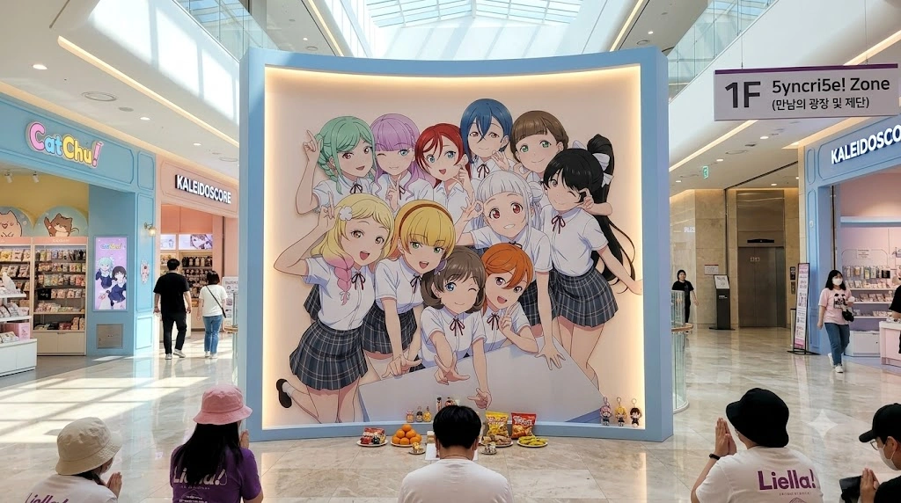
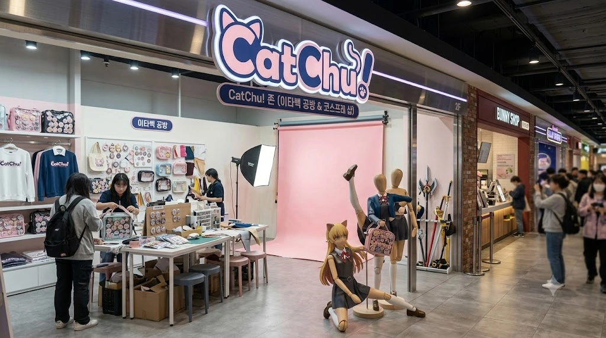
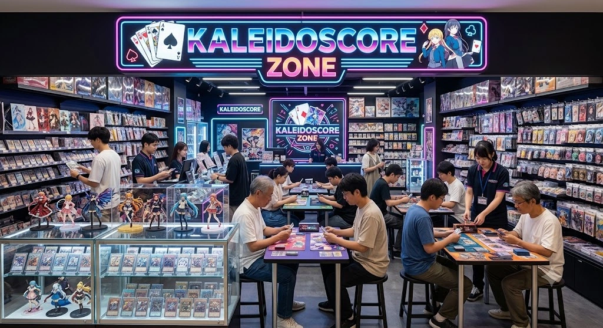
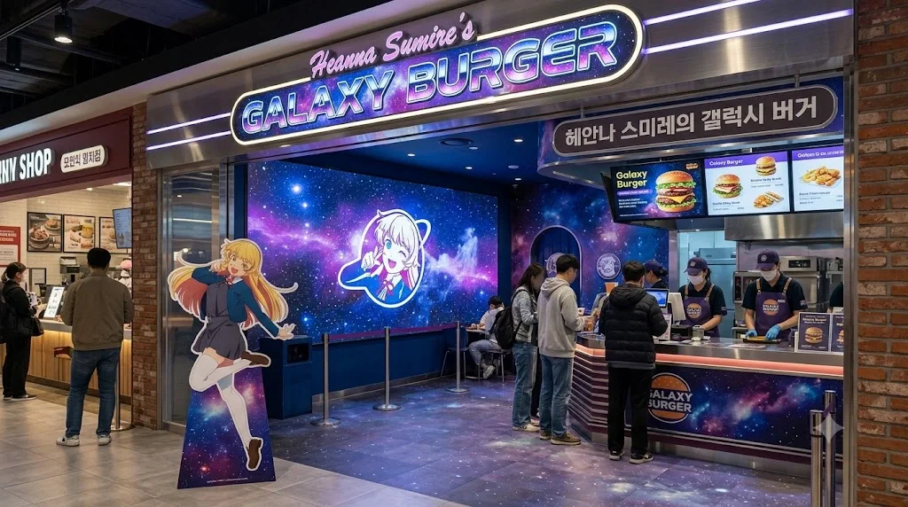
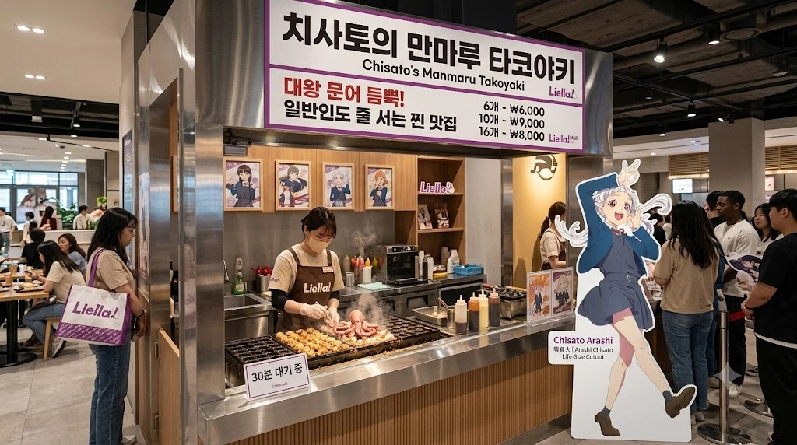
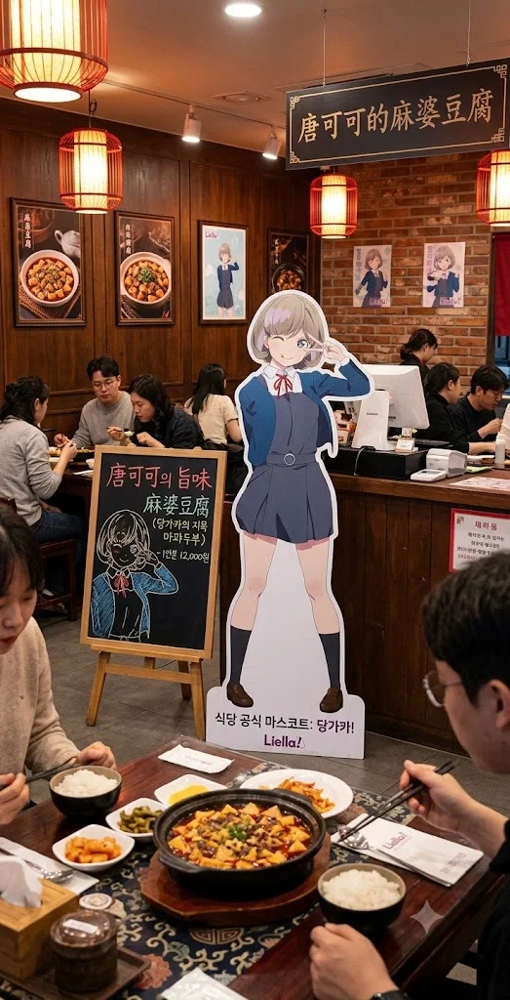
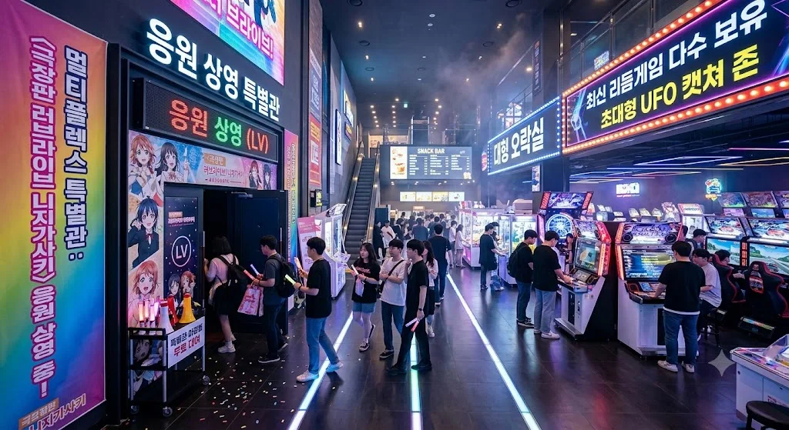
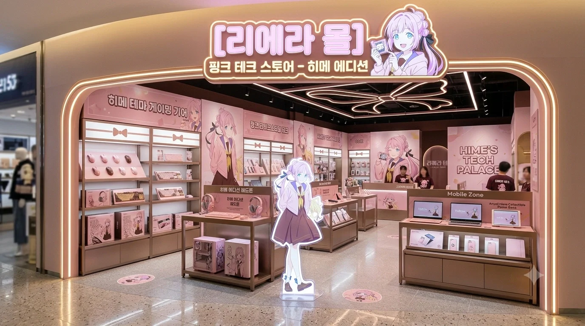
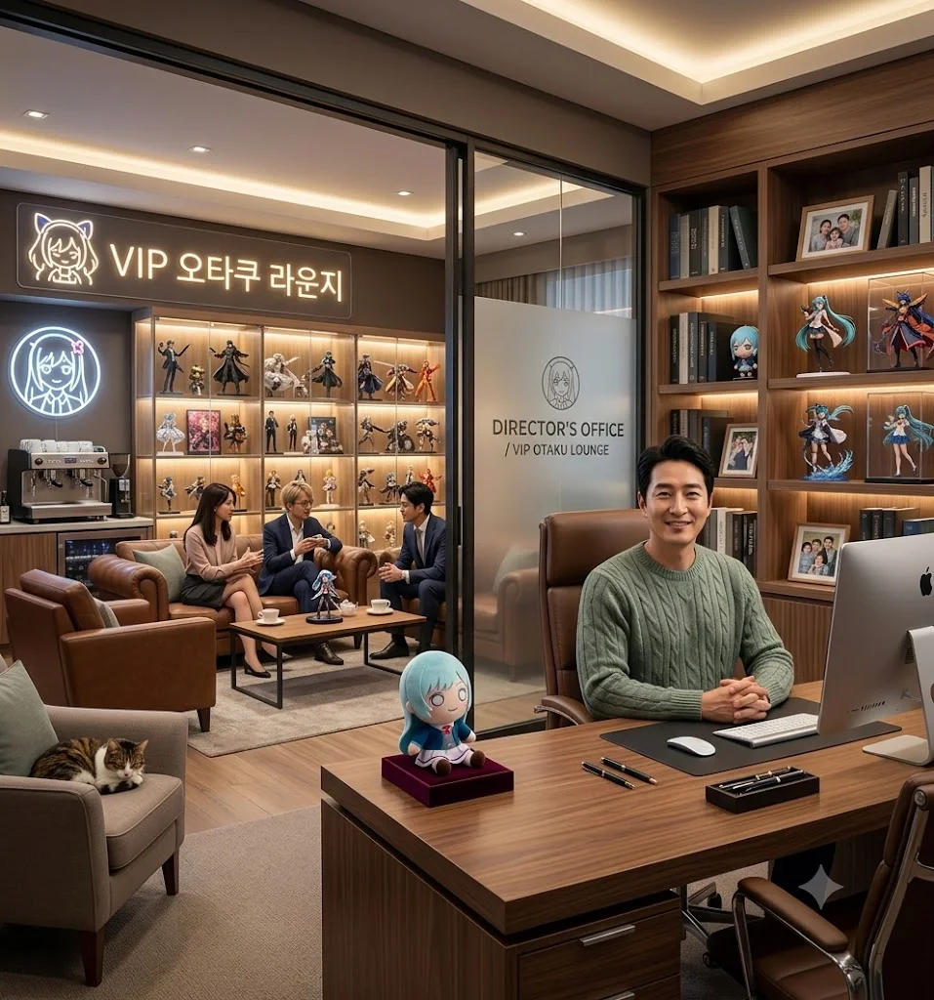
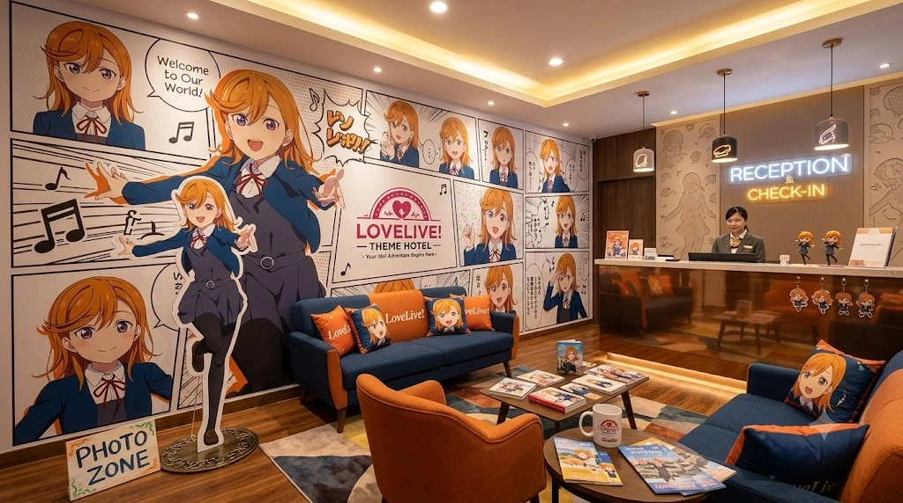
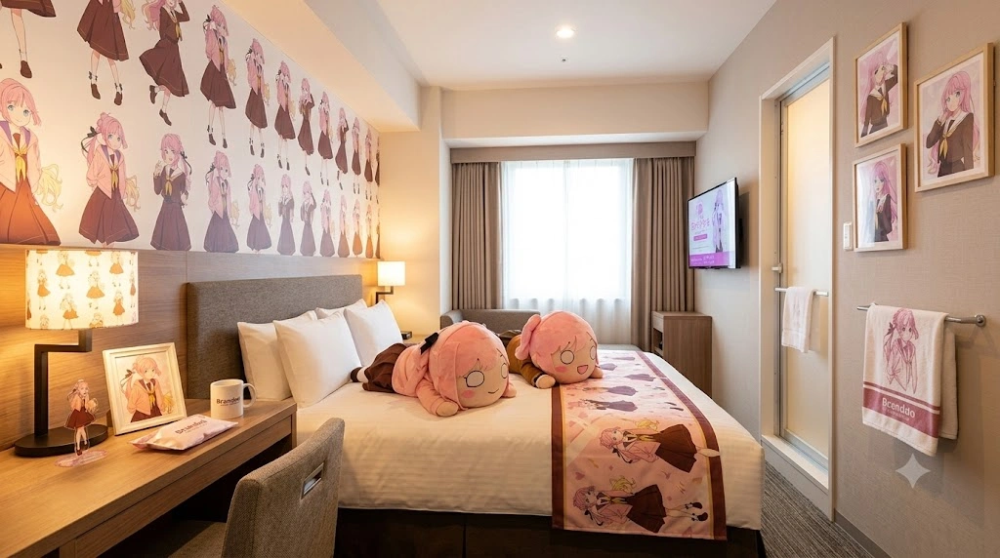

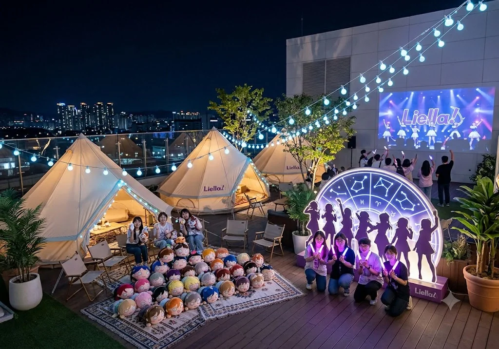
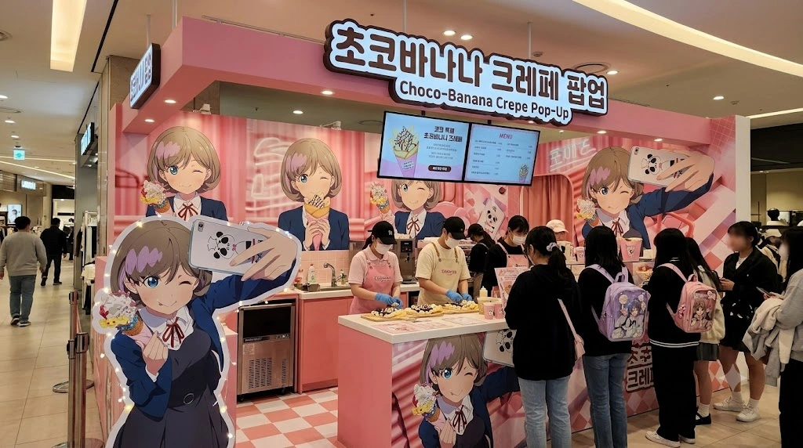
| 층수 | 주요 입점 시설 및 판매 물품 실태 초정밀 상세 분석 |
|---|---|
| RF | 옥상정원 '리에라 가든' (오타쿠 프리미엄 글램핑장) 단순하게 나무 벤치 몇 개 놓인 밋밋하고 더운 옥상이 절대 아니다. 쇼핑몰 6층 옥상에는 최고급 대형 인디언 캔버스 글램핑 텐트 여러 동과, 각 멤버들의 상징이 박힌 대형 별자리 야간 LED 포토존이 럭셔리하게 설치되어 있다. 주말 야간이 되면 전국에서 온 팬들이 텐트를 유료로 대여하고, 넓은 대형 페르시아 카펫 위에 각자 집에서 바리바리 싸 들고 온 네소베리(인형) 굿즈 수백 개를 징그럽게(?) 빈틈없이 깔아놓고 치맥을 하며 노가리를 까는 완벽한 오타쿠 전용 야영장이 된다. 정기적으로 옥상 하얀 벽면에 초대형 4K 빔프로젝터를 쏴서 야외 라이브 상영회를 열며, 수백 개의 킹블레이드 야광봉 불빛이 효빈시의 밤하늘을 화려하게 수놓는 장관을 연출한다. 날씨가 좋은 날이면 코스어들의 야외 스냅 촬영 성지로도 쓰인다. |
| 6F 본관 | 점장 집무실 & 'VIP 오타쿠 라운지' 6층 코너에는 이곳이 쇼핑몰 사장님의 결재 사무실인지, 아니면 억대 돈을 바른 피규어 박물관인지 구분이 전혀 안 가는 임세혁 점장의 집무실이 떡하니 자리 잡고 있다. 그 옆에는 연간 수백만 원 이상을 긁는 찐 VIP 덕후들(예: 임은혜, 오하리 등)만 프라이빗하게 출입 가능한 럭셔리 라운지가 붙어 있다. 라운지 내부는 최고급 에스프레소 머신과 가죽 소파가 놓여 있어, 겉보기엔 재벌집 응접실 같지만 유리 진열장 안에는 구하기 힘든 초고가 한정판 스케일 피규어들이 빽빽하게 모셔져 있는 자본주의 오타쿠의 극치를 보여준다. |
| 6F 신관 | 리에라 호텔 (Liella Hotel) - 초호화 서브컬처 부티크 숙박 시설 최근 리에라몰의 가장 큰 변화이자 막대한 돈줄은 바로 쇼핑몰 6층과 연결된 소규모 별동을 통째로 개조해 오픈한 '리에라 호텔(테마 호텔)'이다. 거대한 17층짜리 호텔을 상상했다면 오산이다. 이곳은 철저한 소수 정예를 타겟으로 한 단 20실 규모의 초호화 부티크 테마 호텔이다. 호텔 로비로 들어서면 벽면 전체가 카논과 멤버들의 역동적인 코믹스 풍 일러스트 컷씬으로 팝아트처럼 화려하게 도배되어 있으며, 리셉션 직원이 완벽한 유이가오카 여학원 교복 유니폼 코스프레를 하고 "어서 오십시오, 전속 전진!"이라며 체크인을 돕는 광기를 보여준다. 총 20개의 객실은 Liella! 멤버들의 각 테마룸으로 알차게 구성되어 있으며, 이 호텔 내부에는 최근 '하스노소라 테마 동(일명 하스동)' 특별 스위트룸 2개가 별도로 증축되었다. 이는 옆 동네 토치만 사장에게 "타 그룹 캐릭터 방은 절대 안 된다"며 단칼에 거절당해 자존심이 상한 딸 임은혜가, 홧김에 아빠 임세혁의 자본을 무자비하게 끌어다 직접 인테리어 공사를 지휘하여 만들어버린 완벽한 '후지시마 메구미' 호화 스위트룸과, 박효빈 시장이 업무 스트레스 해소용으로 가장 애용하는 '안요지 히메 룸'이 위치한 호화로운 구역이다. |
| 5F | 멀티플렉스 (광기의 응원 상영 특별관) & 오락실 & 히메 테크 센터 일반적인 데이트 코스 영화관을 상상하고 팝콘을 사서 예매했다간 10분 만에 고막이 터져서 도망쳐 나갈 수 있다. 이곳의 1관과 2관은 상시 '응원 상영 특별관(LV)'으로 지정되어 있어, 라이브 뷰잉(LV)이나 애니메이션 극장판이 열리면 전 관객이 의자에서 기립하여 야광봉(블레이드)을 미친 듯이 휘두르며 "우오오오!!" 호랑이 떼처럼 믹스 콜을 넣는 거대한 단체 노래방으로 돌변한다. 상영관 출구 바로 옆에는 영화의 여운이 가시지 않은 오타쿠들의 남은 현금을 영혼까지 털어가는 초대형 오락실이 교묘하게 붙어 있다. 일본에서 갓 직수입한 츄니즘, 마이마이 등 최신 리듬 게임 기기 수십 대가 쉴 새 없이 번쩍이고 버튼 부서지는 소리가 나며, 한정판 애니메이션 인형을 뽑을 수 있는 초대형 UFO 캐처(인형뽑기) 존이 365일 불야성을 이루며 투숙객들의 지갑을 진공청소기처럼 빨아들인다. [NEW] 히메 테크 센터 (HIME TECH PALACE): 최근 5층 에스컬레이터 옆에 신설된 전자기기 팝업 스토어. 매장 전체가 파스텔 핑크빛 네온사인과 안요지 히메의 대형 패널로 도배되어 있다. 이곳에서는 히메의 로고가 박힌 한정판 핑크색 게이밍 기어(기계식 키보드, 게이밍 헤드셋, 무선 마우스)와 커스텀 조립 PC를 판매하는데, 오픈 첫날 박효빈 시장이 수행비서를 대동하고 나타나 매장에 전시된 히메 에디션 키보드를 축 스위치 종류별로(청축, 갈축, 적축) 박스째 전부 사비로 쓸어가 버렸다는 무시무시한 자본주의 전설이 내려온다. 덕분에 일반 게이머 오타쿠들은 빈 진열장만 보고 눈물을 흘려야 했다. |
| 4F | 덕후 타겟 전문 식당가 (고칼로리 & 핫플레이스 폭탄 지대) 단순한 백화점 푸드코트가 아니다. 캐릭터의 설정과 세계관을 소름 돋게 음식에 접목시킨 전문 식당가다. - 탕 쿠쿠의 지옥 마파두부: 강렬한 붉은 홍등 인테리어로 꾸며진 정통 사천식 마파두부 전문점. 먹으면 위장과 식도가 타들어 가는 느낌이 드는 오리지널 5단계 캡사이신 돌솥 마파두부를 판다. 놀랍게도 박효빈 시장은 엄청난 매운맛 내공의 소유자로, 야당의 비판 따위는 '알빠노'를 시전하며 주말마다 대놓고 평상복으로 출몰하여 이 5단계 지옥 마파두부를 이마에 땀만 살짝 흘린 채 평온하게 싹싹 바닥까지 긁어먹고는 "국물이 일품이네"라며 한정판 코스터를 챙겨가는 괴물 같은 맵부심을 자랑한다. 그는 매운 음식을 정말 잘 먹어서 주변 직원들이 경악을 금치 못한다고 한다. - 치사토의 만마루 타코야키: 값싼 밀가루 범벅이 아닌, 탁구공만 한 진짜 대왕 문어 다리 조각이 통째로 꽉 차게 들어간다는 전설의 타코야키 맛집. 외부 바삭하고 안은 촉촉한 이 타코야키는 애니를 전혀 모르는 동네 어르신들과 일반인 가족들도 고소한 가쓰오부시 냄새에 이끌려 30분씩 줄을 서서 박스째로 사 간다는 기적의 찐 맛집이다. - 헤안나 스미레의 갤럭시 버거: 신비롭고 몽환적인 우주 은하수(갤럭시) 네온사인 테마로 꾸며진 수제버거 매장. 직원들이 보라색 유니폼과 모자를 맞춰 입고, 성인 남성도 턱관절을 빼야 한 입에 넣을 수 있는 거대한 고칼로리 패티를 쉴 새 없이 그릴에서 구워낸다. 별 모양으로 찍어낸 치즈와 쫀득한 번 디테일이 일품이다. |
| 3F | KALEIDOSCORE 존 (애니메이트, 게이머즈, TCG 샵 블랙홀) 일본 현지에서 직수입한 고가의 아크릴 스탠드, 캔뱃지, 넨도로이드 피규어, 그리고 온갖 서적 굿즈를 파는 쇼핑몰의 메인 심장부 구역. 임세혁 점장이 직접 일본 아키하바라에서 발품 팔고 사정해서 들여온 공식 매장(애니메이트 등)들이 입점해 있다. 자본주의의 블랙홀이자 투숙객들의 월급이 순식간에 녹아내리는 마의 구간이다. 특히 영롱한 네온사인이 켜진 300평 규모의 거대한 TCG(트레이딩 카드 게임) 구역 바닥에는 마법진 카펫이 깔려 있고, 수백 명의 듀얼리스트들이 밤낮없이 테이블에 앉아 피 튀기는 카드 게임을 즐긴다. 매일 오후 3시에는 자체 듀얼 토너먼트가 열려 매장이 터져나갈 듯 붐빈다. 또한 이 구역 한쪽의 음침한 서적 코너는, 이리자가 환장하는 '사쿠라우치 리코 & 요하네' 커플링의 고수위 얇은 책(동인지)이 입고되자마자 1분 만에 매진되는 미스터리한 곳이다. 그 상습 품절 사태의 진범은 놀랍게도 박효빈 시장으로 밝혀졌는데, 리코를 너무나 맹목적으로 사랑하는 그가 매장에 얇은 책이 들어왔다는 소식만 들리면 시청에서 관용차를 몰고 대놓고 날아와 "리코 얼굴 그려진 얇은 책, 묻지도 따지지도 말고 박스째로 다 주쇼"라며 본인 사비(현찰)로 매대를 통째로 쓸어가버리기 때문이었다. 덕분에 늦게 도착한 이리자는 매번 텅 빈 매대 앞에서 허탕을 치며 피눈물을 흘리고 "어떤 미친놈이 다 쓸어갔어!"라며 주먹을 쥐고 있다. |
| 2F | CatChu! 존 (이타백 전문 공방 및 코스프레 스튜디오) 옷은 백화점급 퀄리티의 멀쩡하고 세련된 여성용/남성용 기성복을 팔지만, 매장 앞의 마네킹들이 전부 목이나 관절을 기괴하게 꺾어 애니메이션 캐릭터들의 시그니처 아이돌 포즈를 취하고 있어 지나가는 일반인들을 섬뜩하게(?) 만든다. 한쪽 안쪽에는 오타쿠들의 필수품인 가방(이타백)을 화려하게 캔뱃지와 체인으로 세팅하고 커스텀해 주는 장인들이 상주하는 전문 공방 부스가 있다. 그 옆에는 대형 지속광 조명과 핑크색 크로마키 배경지가 완벽하게 쳐진 코스프레 렌탈 스튜디오가 완비되어 있어, 굿즈를 사고 바로 가발을 빌려 인증샷을 남길 수 있는 완벽한 덕질 원스톱 서비스를 제공한다. |
| 1F | 5yncri5e! 존 (만남의 광장 및 거대 제단) 쇼핑몰 1층 중앙 로비 홀에는 거대한 Liella! 11인 멤버들의 전신 일러스트 패널이 집채만 한 병풍 액자처럼 위압적으로 세워져 있다. 원래는 그냥 사진을 찍는 포토존이었으나, 어느 순간부터 전국에서 몰려든 극성 팬들이 자발적으로 무릎을 꿇고 귤이나 과자, 고급 음료수를 '공물'로 바치고 두 손을 모아 합장하며 참배(?)를 하고 가는 기현상이 발생했다. 흡사 동네 어귀의 샤머니즘 성황당 나무나 고대 신전을 방불케 하는 기괴한 종교적 광경이 매일같이 연출되며, 직원들은 이 공물들을 낮에는 치우지도 못하고 매일 밤 정중하게 수거해 푸드코트 야식 간식으로 쏠쏠하게 쓴다고 한다. |
| B1 | 초코바나나 크레페 팝업 스토어 및 마트 (지하 매출의 심장) Liella! 멤버들이 작중에서 환장하며 밥 대신 먹는 '초코바나나 크레페'를 현실에 완벽히 구현하여 전문으로 파는 핑크빛 팝업 스토어. 윙크하는 쿠쿠 패널이 입구에서부터 달콤한 바닐라 향 냄새로 손님을 반겨준다. 듬뿍 담긴 고소한 동물성 생크림과 달콤한 바나나, 초코 시럽의 미친 퀄리티 때문에, 이타백을 멘 여학생들부터 넥타이를 푼 직장인 아저씨들까지 지하상가를 빙 두를 정도로 끝이 안 보이는 1시간 대기줄을 만든다. 하루에 대형 크레페 반죽기 3대의 모터가 과부하로 타는 냄새가 나며 터져 나갈 정도로, 일일 1,500장 이상을 미친 듯이 팔아치우며 쇼핑몰 지하 1층 전체 매출을 완벽하게 하드캐리한다. 특히, 박효빈 시장의 확고한 주말 루틴으로도 매우 유명한데, 그는 4층 식당가에서 5단계 지옥 마파두부로 땀을 쫙 뺀 뒤, 지하 1층으로 내려와 이 달달한 쿠쿠 크레페를 양손에 쥐고 우적우적 씹어 먹으며 입가심을 하는 것을 무조건적인 필수 코스로 삼고 있다. 크레페를 다 먹은 후에는 6층 신관 리에라 호텔의 '히메룸'으로 직행해 낮잠을 자며 완벽한 하루를 마무리한다. |
7. 최첨단 씹덕 친화적 구조 (자발적 개미지옥)
과거 이곳은 "들어온 놈이 돈을 쓰기 전엔 나가지 못하는 미로"라는 악명이 있었으나, 1대 회장이었던 임승현은 의외로 건물을 꽤 멀쩡하게 지어놓았었다. 그저 장사가 안되어서 에스컬레이터를 끄고 방치했던 것뿐이다.
2022년 대박을 터뜨린 임세혁은 무려 500억 원을 쏟아부어 건물을 전면 리모델링했다. 이제 사람들은 길을 잃어서 못 나가는 게 아니라, "너무 편안하고 쾌적해서 제 발로 나가기 싫어하는 자발적 개미지옥(오타쿠 델루나)"에 빠지게 된다.
- 호텔급 화장실과 덕후 BGM: 전 층 화장실을 5성급 호텔 수준으로 뜯어고치고 전 좌석 비데를 설치했다. 화장실 내부에는 Liella! 멤버들의 캐릭터 보이스로 "손을 깨끗이 씻어요~"라는 안내 방송이 나오며, 잔잔한 애니메이션 오르골 BGM이 흐른다.
- 무한 충전 및 5G Wi-Fi의 늪: 쇼핑몰 곳곳에 푹신한 소파와 수백 개의 220V 콘센트, USB 충전 포트를 깔아놓았다. 무료 5G Wi-Fi가 터져서 오타쿠들이 쇼핑하다 지치면 소파에 누워 가챠 게임(스쿠페스2 등)을 돌리느라 집에 갈 생각을 안 한다.
- 물품 보관소 천국: 굿즈를 잔뜩 사서 손이 무거운 팬들을 위해 층마다 대형 무료 물품 보관함을 수십 개씩 설치했다. 손이 가벼워진 팬들은 "어? 손이 비었네? 더 사야지!"라며 다시 지갑을 여는 창조 경제의 기적을 보여준다.
- 블랙홀 효과: 시계를 치우고 창문을 없앤 건 예전과 같지만, 이제는 빵빵한 에어컨과 화려한 네온사인, 그리고 심장을 울리는 아이돌 BGM 때문에 오타쿠들이 현실 감각을 잃고 "여기가 천국이다"라며 자발적으로 지갑을 바치는 완벽한 사육(?) 구조가 완성되었다.
8. 리엘라 스테이와의 '유이가오카 동맹' (공동 프로모션)
2023년, 중구 궁영동에 리엘라 스테이라는 미친 컨셉의 게스트하우스가 오픈했다는 소식을 들은 임세혁은 즉시 벤츠를 몰고 궁영동으로 달려갔다. 그곳 사장과 러브라이브 세계관 토론을 벌인 뒤, 두 사람은 그 자리에서 도원결의(?)를 맺고 공식적인 '유이가오카 상권 동맹'을 체결했다.
- 유이가오카 패스포트: 리에라몰에서 10만 원 이상 구매 시 '리엘라 스테이' 1층 카페 Yuigaoka의 시그니처 메뉴(카논의 사과 라떼 등) 교환권을 증정한다. 반대로 리엘라 스테이 투숙객에게는 리에라몰 지하 1층 초코바나나 크레페의 'VIP 하이패스 대기권'이 주어진다.
- 셔틀 서비스: 비공식 '유이가오카 스쿨버스'처럼 꾸민 하늘색 도색 솔라티 셔틀버스가 당가역(리에라몰)과 효빈성앞역(리엘라 스테이) 사이를 수시로 운행하며 오타쿠들을 실어 나른다.
- 광기의 부부 동반 호캉스: 임세혁의 아내는 렌 오시로 각성한 이후, 매년 결혼기념일마다 리엘라 스테이의 '렌 룸 (Sapphire Blue)'을 한 달 전부터 예약해 부부 동반 호캉스를 즐긴다.
이때 남편 임세혁에게 리에라몰에서 가져온 다기 세트로 직접 홍차를 타오게 시키며 아가씨 플레이(?)를 즐긴다 카더라. - 시장님의 숟가락 얹기: 박효빈 시장(탕 쿠쿠 오시)은 이 두 미친 오타쿠 성지의 결합을 흐뭇하게 지켜보며, 시 예산을 들여 아예 효빈 시티투어 버스의 공식 루트에 '당가역(리에라몰) -> 궁영동(리엘라 스테이)' 코스(일명 효빈-하라주쿠 순례길)를 대놓고 추가해버렸다.
9. 토치만 호텔 & 워터드롭 호텔과의 기묘한 자본주의 공생
리에라몰의 점장 임세혁과 토치만 호텔의 사장, 그리고 워터드롭 호텔의 고석연 지배인은 뗄래야 뗄 수 없는 지독한 혈연이자 자본주의 파트너 관계다.
워터드롭 호텔은 2성급이지만 '귤'과 '치카'라는 강력하고 오리지널리티가 있는 근본 아이덴티티를 제공하여 전체 지역 상권의 밑밥(컨셉의 뼈대)을 깔아주는 핵심적인 역할을 한다. 한편, 토치만 호텔은 3성급을 노리는 쾌적한 인프라와 자본력으로 타지역 관광객 및 고급 숙박객을 대거 빨아들인다. 토치만이 손님을 모아주면, 그 투숙객들이 낮에는 전부 리에라몰로 넘어와 굿즈와 식당에 수백만 원씩 돈을 쏟아붓는 완벽한 '오타쿠 순환 생태계 카르텔'이 구축되어 있는 것이다.
명절이나 오프라인 행사가 열릴 때마다 두 사장님은 고해영의 홍보 모델료나 마스코트 점유율을 두고 서로 멱살을 잡고 으르렁대며 피 터지게 싸우는 척을 하지만, 뒤로는 카톡방을 파서 효빈시 지역 상권을 다 씹어먹고 어떻게 덕후들의 돈을 더 뜯어낼지 모의하는 무서운 흑막들이다. 이 얽히고설킨 3대 세력과 당가동 자경단 Aqours 오시 어벤져스가 엮이면서 리에라몰에서는 매일같이 영화보다 더 영화 같은 미친 일화들이 터져 나온다.
10. 기적의 막둥이 '임시연'의 리에라몰 활보 대소동 (레전드 특별 일화 5선)
2023년 말에 태어난 첫째 임은혜와 17살 터울의 늦둥이 막내딸 임시연은 태어나자마자 온 가족과 리에라몰 300명 직원들, 심지어 매일 오는 오타쿠 단골 고객들의 사랑을 독차지하는 아기 천사로 등극했다. 걸음마를 막 떼기 시작할 무렵부터 유모차를 탈출해 거대한 쇼핑몰 곳곳을 아장아장 누비며 벌인 귀엽고도 아찔한 레전드 에피소드들이 쏟아지고 있다.
1. 김시연과의 만남 (합법 얀데레를 단 1초 만에 녹여버린 아기천사)
임시연이 돌이 막 지났을 무렵, 첫째 임은혜가 동생이 너무 예뻐 참지 못하고 명품 유모차를 끌고 리에라몰 1층 카페에 자랑하러 나타났다. 마침 그곳을 지나던 효빈대 학생회장이자 '합법 얀데레'로 효빈대 에타에서 악명 높은 김시연(대학생, 2004년생)이 이들을 마주쳤다. 평소 서늘한 눈빛으로 팩트 폭격만 날리며 사람을 기죽이던 얼음공주 김시연은, 유모차 안에서 해맑게 "꺄아! 빠빠!" 하고 웃으며 고사리 같은 손을 뻗는 아기 임시연(공교롭게도 이름이 똑같은 동명이인)과 눈이 마주친 순간 뇌 정지가 오며 그 자리에 털썩 무릎을 꿇고 주저앉아버렸다.
김시연은 "이, 이렇게 완벽하고 무해한 생명체가 존재하다니... 우리 소유 쨩 다음으로 완벽해...!"라며 심장을 부여잡고, 그날부로 아기 임시연의 진성 찐팬(거의 극성 맘카페 회장급)으로 각성해버렸다. 이후 김시연은 리에라몰에 올 때마다 본인 생활비와 알바비를 탈탈 털어 유아용 최고급 명품 아동복과 유기농 간식을 한가득 사들고 조공을 바치며, 누가 유모차 근처에서 큰 소리만 내도 눈의 안광을 끄고 "우리 시연이 놀라잖아. 뿟뿌 데스와. 당장 입 닥치고 조용히 해."라며 살벌한 얀데레 모드로 주변을 초토화시키는 전속 무급 경호원을 자처하게 되었다.
2. 1층 5yncri5e! 존 거대 제단 공물(귤) 약탈 사건
임시연이 두 다리에 힘이 생겨 걸음마 폭주족으로 진화하기 시작한 15개월 무렵, 아빠의 눈을 피해 1층 중앙 광장으로 아장아장 돌진했다. 거대한 Liella! 패널 앞에 오타쿠들이 경건하게 바쳐놓은 공물(탄성군 특산물 감귤과 각종 비싼 과자)을 본 아기는, 제단의 위엄 따위는 가볍게 무시하고 엉금엉금 기어올라가 가장 크고 윤기 나는 귤을 덥석 집어 고사리 같은 손으로 까먹기 시작했다.
보통 신성한 전시물이나 공물을 건드리면 난리가 나야 정상이지만, 이를 현장에서 본 수십 명의 성지순례객들은 분노하기는커녕 "우오오!! 우리 탕 쿠쿠 사마의 제단에 점장님의 귀여운 아기 천사가 강림하셔서 공물을 흠향하신다!!"라며 일제히 주머니에서 주황색 야광봉을 꺼내 흔들며 아기의 오물거리는 먹방을 경건하고 열광적으로 직관했다. 뒤늦게 기저귀 가방을 들고 달려온 임세혁 점장이 식은땀을 뻘뻘 흘리며 "고객님들 죄송합니다!"를 외치고 아기를 번쩍 안고 도망가는 훈훈한 촌극이 벌어졌다.
3. 3층 KALEIDOSCORE 존 '신의 손' 가챠 대박 사건
아빠 임세혁의 손을 잡고 3층 TCG 카드 매장에 놀러 온 임시연. 수십 명의 듀얼리스트들이 땀을 뻘뻘 흘리며 값비싼 카드 팩을 뜯고 폭사하여 절망하고 있을 때, 아기가 진열대 하단에서 반짝이는 확장팩 상자 하나를 고사리 같은 손으로 '툭' 쳤다. 아빠가 무심코 그 팩을 사서 뜯어주었는데, 거기서 0.001% 확률의 100만 원짜리 초희귀 시크릿 레어 카드가 찬란한 빛을 내며 튀어나왔다.
이를 목격한 매장 내 수십 명의 카드 덕후들이 하던 듀얼을 멈추고 아기를 둥그렇게 둘러싼 뒤 "신의 손이다!! 황금의 럭키 아기다!! 점장님, 제발 저도 한 팩만 골라주십쇼!!"라며 바닥에 엎드려 아기에게 절을 하는 사이비 종교 같은 미친 광경이 펼쳐졌다. 그날 이후 시연이는 TCG 매장에서 '황금의 손'으로 불리게 되었다.
4. 지하 1층 초코바나나 크레페 매장 주방 난입과 완벽한 프리패스
달달한 바닐라 냄새에 홀린 임시연이 에스컬레이터를 타고(오빠 임승민의 철통 보호 아래) 지하 1층으로 내려가, 끝이 안 보이는 크레페 팝업 대기줄을 그대로 뽈뽈뽈 무시하고 주방 카운터 안쪽으로 당당하게 난입했다. 위생 모자를 쓴 매장 직원들은 침입자에게 화를 내기는커녕 "아이고 도련님 아니, 우리 점장님 아가씨 오셨습니까!"라며 90도로 깍듯하게 인사한 뒤, 묻지도 따지지도 않고 아기 전용 '미니 딸기 듬뿍 크레페'를 단 1분 만에 연성해 두 손으로 정중히 바쳤다.
보통 1시간 대기 줄에서 새치기를 하면 폭동이 일어나지만, 땀 흘리며 줄 서 있던 여학생들과 험악한 인상의 아저씨들도 크레페 생크림을 코에 잔뜩 묻히고 먹는 아기의 살인적인 귀여움에 심장을 부여잡고 "아기가 귀여우니까 새치기 무죄 큥!! 5장 더 구워줘라!!"를 외쳤다는, 완벽한 자본주의 서열 1위 프리패스 일화다.
5. 2층 CatChu! 존의 살아있는 미니 코스프레 마네킹 대소동
엄마 연월엽을 따라 2층 이타백 공방과 코스프레 샵에 놀러 온 시연이. 공방 직원들이 심심해하던 찰나, 아기에게 Liella! 멤버들의 1/5 축소 사이즈 초미니 하복 유니폼(작은 주름치마와 앙증맞은 빨간 리본)을 정성껏 입혀보았다. 꼬까옷을 입고 어리둥절한 표정으로 매장 앞을 뒤뚱거리는 아기의 파괴적인 귀여움에, 매장을 지나던 모든 손님들의 발걸음이 그 자리에 얼어붙어 멈췄고 대포 카메라 플래시가 아이돌 기자회견장처럼 미친 듯이 터졌다.
이날 찍힌 시연이의 치명적인 코스프레 영상은 언니 임은혜의 '은혜당' 채널 틱톡 쇼츠에 업로드되어, 단 하루 만에 알고리즘을 타고 조회수 300만을 찍는 기염을 토했다. 이 사건으로 시연이는 단숨에 리에라몰 최고의 핫스타로 등극했으며, 팬들은 "다음엔 렌 쨩 교복을 입혀달라"며 댓글 창을 마비시켰다.
11. 연계 교통
역세권이라는 말이 무색하지 않게, 쇼핑몰 지하 2층이 효빈 도시철도 인프라와 완벽하게 연결되어 있다.
- 도시철도: 2 빈효 당가역에서 하차 후 '탕쿠쿠 로드'라 불리는 화려하게 도색된 지하 직결 통로를 통해 비 한 방울 안 맞고 도보 3분 이내로 쇼핑몰 B2 주차장으로 진입할 수 있다. 효빈 2호선과 빈효선 광역전철의 환승역이라 접근성은 최상이다.
- B2~B3 주차장 (덕후들의 성지 주차장): 주차장 기둥 구역이 A, B, C 구역이 아니라 '카논 구역', '쿠쿠 구역' 등 멤버 이름과 퍼스널 컬러로 칠해져 있다. 주차 위치를 까먹으면 "나 오늘 치사토 짱 가랑이 밑에 주차했어"라고 기괴하게 기억해야 한다.
- 시내버스: 당가동 파스텔 블루 르네상스 정책에 따라, 리에라몰 정문 앞 버스 정류장에는 효빈시의 다양한 테마 도색 버스들이 수시로 정차한다. 정류장 벤치마저 탕 쿠쿠의 하늘색으로 깔맞춤 되어 있다.
12. 관련 문서
각주
- 둘째 아들놈은 기어코 불법 도박 하우스를 운영하다 쇠고랑을 차고 감방에 들어갔다. 가문의 가장 빛나는 수치는 그를 손절한 셋째 임세혁뿐이었다. [이동]
- 아내는 입덕 이후 하즈키 렌 오시로 밝혀졌으며, 남편 몰래 한정판 피규어를 사모으다 남편에게 걸려 등짝을 맞은 적이 있다. 학창 시절 스토커 트라우마 따위는 엄청난 금융 치료와 남편의 지갑, 그리고 밤의 파격적인(?) 노력 앞에 산산이 부서졌다. [이동]
- 소송으로 길바닥에 나앉은 혐오 단체 간부 중 한 명은 야간 대리운전을 뛰다가, 우연히 술 취한 임세혁을 태우고 눈물을 흘리며 사과했다는 웃지 못할 후일담이 있다. [이동]